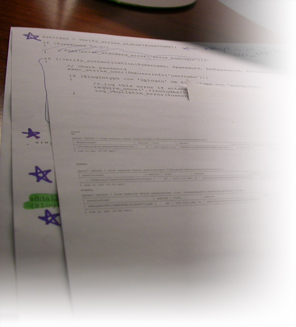
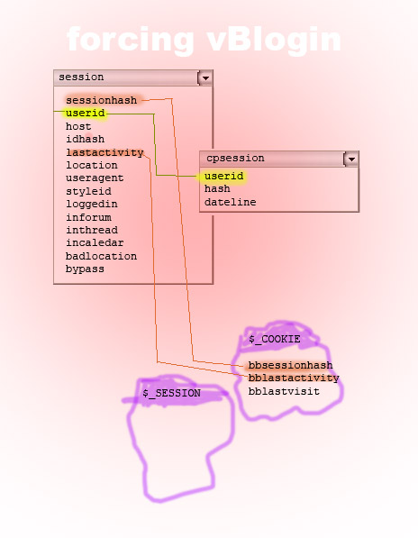
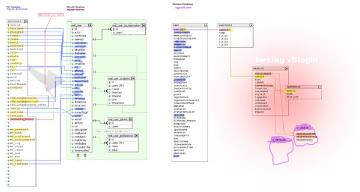
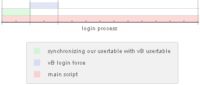

This plug-in was written to solve a problem of having two sets of usernames and passwords. One set of credentials was required to login to Intranet/Staff Area of an institution. Another set of credentials was required to login to vBulletin. This was a very redundant and unnecessary process for users. Additionally and more importantly, this discouraged users from using bulletin board system (vBulletin)
Thus, this plug-in was built with idea of vBulletin for our website, and not our website for vBulletin simply because we use our own multi-level authentication system.
This problem was solved in two steps:
1. One way syncronize user data from our own authentication system into vBulletin.
2. During the process of login into our authentication system, force seamless login into vBulletin.

Project notes while trying to reconstruct vBulletin authentication process.

Planting cookies.

vBulletin is just a bit of a bigger scope project.

A visual explanation of how vB login force is embedded into our own authentication system.